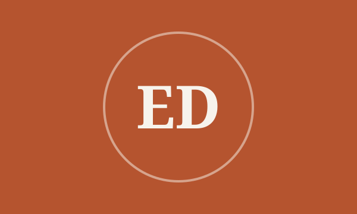
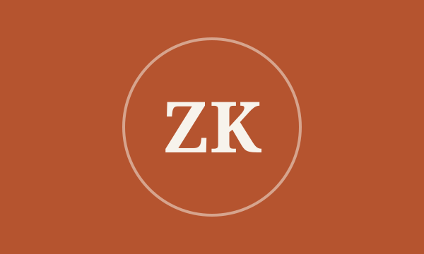
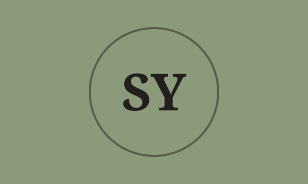
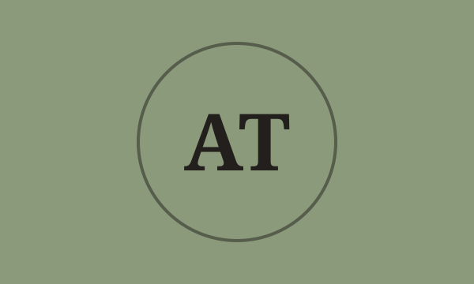
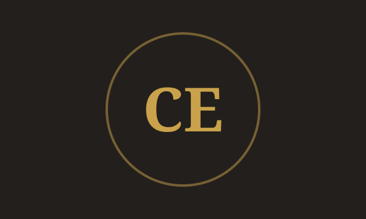
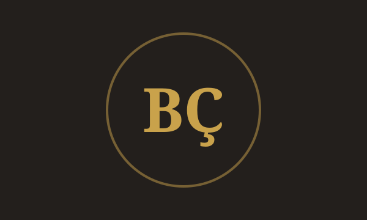

Resim
Elif Demirtaş
Yağlıboya ve suluboya eğitmeni · 12 yıl deneyim
Işık ve renk üzerine çalışan ressam. Manzara ve doğadan çalışmayı sever, öğrencilerini kendi görsel dillerini bulmaya teşvik eder.
Verdiği atölyeler
Atölyelerimizi alanında deneyimli sanatçılar yürütüyor. Gruplarımız küçük tutulur; her katılımcıyla birebir ilgilenilir.

Yağlıboya ve suluboya eğitmeni · 12 yıl deneyim
Işık ve renk üzerine çalışan ressam. Manzara ve doğadan çalışmayı sever, öğrencilerini kendi görsel dillerini bulmaya teşvik eder.
Verdiği atölyeler

Konuk sanatçı · 11 yıl deneyim
Ege peyzajlarını yağlıboya ile işleyen sanatçı. Her dönem seçili atölyelerde konuk olarak yer alır.
Bu dönem konuk sanatçı olarak seçili etkinliklerde yer alıyor.

Çark ve sır eğitmeni · 9 yıl deneyim
Çarkta form çekme ve sır kimyası üzerine uzmanlaşmış seramik sanatçısı. Başlangıç gruplarıyla çalışmayı tercih eder.
Verdiği atölyeler

El şekillendirme eğitmeni · 15 yıl deneyim
Anadolu çömlekçiliği geleneğini çağdaş formlarla buluşturan seramik sanatçısı.
Verdiği atölyeler

Modelaj ve bronz eğitmeni · 14 yıl deneyim
Figüratif ve soyut heykel çalışan sanatçı. Portre modelajı ve bronz döküm süreçlerinde deneyimlidir.
Verdiği atölyeler

Taş ve metal eğitmeni · 10 yıl deneyim
Taş oyma ve metal kaynak teknikleriyle çalışan heykeltıraş. Atölyelerinde güvenli çalışma alışkanlığını ilk sıraya koyar.
Verdiği atölyeler